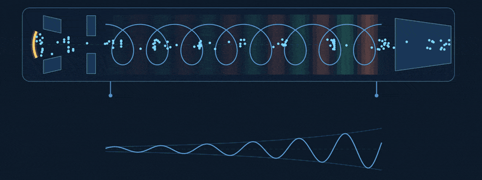
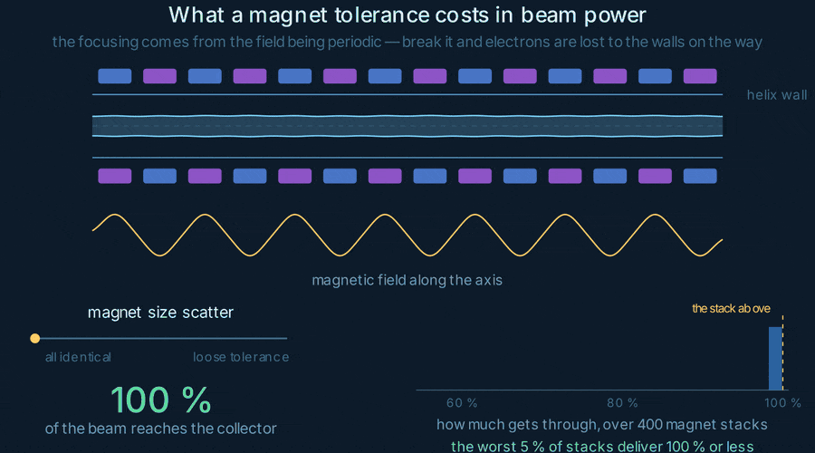

A sensitivity study on a microwave vacuum tube: how far the manufacturing scatter of its focusing magnets propagates — through the electron beam, and into the signal the tube amplifies — with a learned surrogate standing in for a physics run that takes hours.
Radars, satellite downlinks and electronic-warfare systems all need to turn a faint microwave signal into a very strong one. Past a few hundred watts, and up into the tens of gigahertz, that job still belongs to a vacuum device: the traveling-wave tube.
Inside it, an electron gun fires a continuous, pencil-thin beam down the axis of the tube. The signal to be amplified is wound around that beam as a helix of wire, which slows its forward march down to the speed of the electrons themselves. Wave and beam then travel together for the length of the tube — and the beam hands its energy over to the wave.

In free space the wave outruns the electrons several times over. Coiling the wire forces it to take the long way round, dropping its forward speed to a fraction of c — the speed of the beam.
The axial field of the wave holds some electrons back and pushes others forward. Within a few centimetres the smooth stream has become a train of dense bunches.
The beam is set slightly faster than the wave, so the bunches drift into the decelerating phase and give up energy. The signal grows exponentially — 40 to 50 dB end to end.
A traveling-wave tube pinches its beam with a stack of permanent magnets — rings of alternating polarity, one after another down the tube. The focusing does not come from any one of them; it comes from the field being periodic. Break the periodicity and the beam stops being held.
Manufacturing breaks it. Magnets come off the line with dimensional scatter — a little under or over nominal — and every deviation leaves a dent in the field the beam travels through. The envelope starts to scallop, and wherever it swells past the helix radius that part of the beam is simply scraped off on the wall: current lost, heat deposited where it is least wanted, and power missing from the signal the tube exists to amplify.
What the study measures is therefore the beam that arrives — the fraction of the current still there at the collector. So the question is not does this design work. It is: how much manufacturing scatter can the tube absorb before it starts losing beam, and which dimension is it most sensitive to? That is a question about a distribution rather than about a single design — which is exactly what makes it expensive.

Every draw in that histogram is one stack of magnets sampled from its tolerances, and one full electron-optics run in ANSYS to find out how much beam survives it: hours of CPU. A Monte-Carlo study that converges wants thousands of them, and a sensitivity analysis wants thousands more.
Hence the surrogate: run the expensive simulation a few hundred times, let a model learn the mapping from magnet geometry to transmitted beam, and run the Monte-Carlo on the model instead. Milliseconds a draw turns a study you cannot afford into one you can converge.
No historical dataset existed — nobody had logged thousands of magnet stacks and the beams they produce. The training data had to be manufactured, which made the design of experiments as much a part of the work as the modelling.
The magnet dimensions stop being single values and become probability distributions, one per manufacturing tolerance. Persalys (the OpenTURNS front end) carries that description and drives the sampling plans.
Monte-Carlo draws from those distributions, each one a full electron-optics run in ANSYS, each returning how much of the beam that stack of magnets actually delivers. This is the step that costs hours, and the reason everything downstream exists.
Rather than guessing an architecture, H2O AutoML benchmarks whole families of models — linear models, random forests, gradient boosting, stacked ensembles — on the same targets. That sets the baseline any custom model has to beat.
A neural network in TensorFlow mapping magnet geometry to transmitted beam, with the feature preparation, scaling and validation split built around the structure of the simulated data.
With a surrogate answering in milliseconds, the Monte-Carlo can run at a sample size the solver could never reach — enough to see the distribution of delivered beam power and to rank which magnet dimension the tube is most sensitive to.
One draw of magnet dimensions goes in; one number comes out — the beam power that reaches the collector. Nothing more exotic than that, and that is the point: it is the same question the solver answers, asked of a function you can evaluate a hundred thousand times.
The dimensions named here are the obvious ones for a ring magnet; the set the study varied is the project's own. The point is the shape of the mapping — a vector of drawn dimensions in, one number out — not the particular list.
The top row is what one honest answer costs. The bottom row is how the study actually runs, with the learned model standing exactly where the solver was.